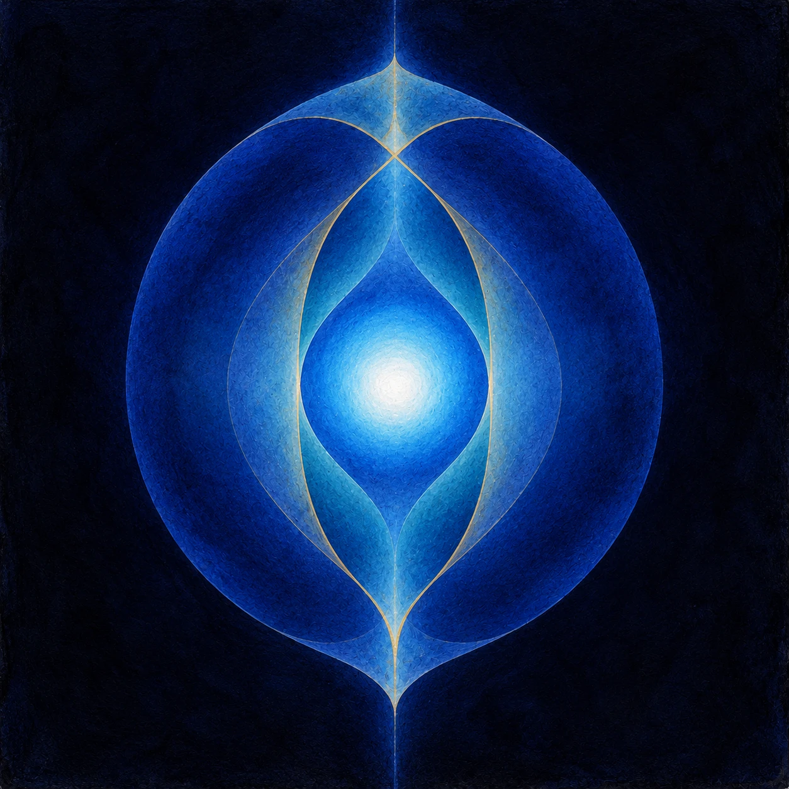

Sovereign Biophysics · Analysis
The BionExperiments
Wilhelm Reich and the blue luminosity.Oslo and New York, 1936–1945.

The wrong container
In January 1939 an assistant in Wilhelm Reich’s Oslo laboratory was showing a visitor how the bion preparations were made. She reached into the sterilizer for a container of earth, took ocean sand instead, and heated it to incandescence. Two days later the sand had produced a culture. Under the microscope it showed something Reich had not seen before.
“Under the microscope this new kind of culture appeared as large, scarcely motile, packets of energy vesicles glimmering with an intense blue.”
Wilhelm Reich, The Cancer Biopathy, Ch. III.2 (FSG, 1973)
He named them SAPA bions, for sand packet. Within a few weeks they had changed the direction of his work. The blue he saw in them would follow him through the next decade: into a darkened basement, into a metal-lined box, into the night sky over a lake in Maine, and into a frozen flask of water.
The first vesicles
The bions
Reich came to the microscope from the body. As a psychoanalyst in Vienna and then Oslo, he had been measuring electrical charge at the skin during pleasure and anxiety, and reading what he found as a rhythm of expansion and contraction, charge and discharge. He wanted to know whether the same rhythm could be watched in simpler living matter.
From 1936 he swelled, boiled, and autoclaved grass, moss, earth, coal, soot, egg white, and blood, and watched the results at magnifications of 2,000 to 4,000 times. The material broke down into small vesicles that moved and pulsed. He called them bions:
“The term ‘bion’ refers to the vesicles into which all matter disintegrates if made to swell. These vesicles represent transitional forms between non-living and living matter.”
The Cancer Biopathy, Ch. II
He published the work in Oslo in 1938 as Die Bione (The Bion Experiments on the Origin of Life). The book is careful about its own structure:
“I fully realize that the same findings are open to other interpretations than my own. For this reason I have carefully separated the factual report in Part One from the interpretation in Part Two.”
The Bion Experiments, Preface (FSG, 1979)
That separation is the most useful thing to carry into the rest of his work. It is also where the story of the blue begins. In Die Bione blue is barely present. Coal structures are “bluish-black,” and a culture grows “blue-gray.” The colour is recorded and nothing more is made of it. Ten years later, looking back in The Cancer Biopathy, Reich writes of “the blue PA bions” as though they had always been the centre, and then says how little he understood at the time:
“To be sure, I clearly saw that the blue coloration of the PA bions was somehow connected to their killing effect; but I could not have suspected that this blue was the specific color of biological energy.”
The Cancer Biopathy, Ch. VII
The blue was seen first and understood later, and Reich says so himself.
By then he had sorted his preparations into two kinds. PA bions were the vigorous, blue-glimmering vesicles. T-bacilli were small rod-shaped forms he linked to tissue breaking down. He watched the two meet. The blue bions killed T-bacilli, and in the struggle many “had lost their blue color,” degenerating into black cocci. Blue had become his sign of a living charge, and its loss his sign of decay.
The sand packets
SAPA
The SAPA cultures were stronger than anything before them. Reich repeated the sand experiment eight times over a few months and got the same formations five times. Then his body began to report on them.
“For four weeks, I examined the SAPA bions every day for several hours. After a few days, my eyes began to smart whenever I looked into the microscope for any length of time.”
The Cancer Biopathy, Ch. III.2
He switched to a monocular tube, and only the eye at the eyepiece hurt. Then both eyes developed conjunctivitis and an ophthalmologist ordered him away from the microscope. A quartz slide of culture laid on the skin for ten minutes left “an anemic spot with hyperemic margin.” He tried it on his students. Those he knew to be “vegetatively very alive” reacted; “the emotionally weaker ones showed little or no reaction.” Rubber gloves kept near the cultures deflected an electroscope leaf without being rubbed. Metal instruments in the room became magnetic.
He laid photographic plates near the cultures, some in holders and some under lead, with control plates elsewhere in the same room. Every plate fogged.
“To my surprise, the control plates in the same room were also fogged. I could not understand it. … the radiation seemed to be omnipresent. However, it was also possible that there had been some experimental oversight.”
The Cancer Biopathy, Ch. III.2
He held both readings open. The pattern that shapes the rest of the story starts here: when a control showed the effect too, Reich took it as a sign that the energy was everywhere.
In the dark
The basement
He moved the cultures to dark basement rooms and sat with them.
“Once my eyes had become accustomed to the darkness, the room appeared not black but grayish blue. I saw fog-like vapors, streaks of blue light, and dots darting about. Light of a deep violet color seemed to come from the walls and the objects around the room. … But when I closed my eyes, the blue light impressions continued. That was disconcerting.”
The Cancer Biopathy, Ch. III.2
One evening he stayed five hours.
“Gradually, the blue glimmer surrounded my body and objects in the room like a hazy, slow-moving, gray-blue luminous vapor. I admit I felt frightened.”
He knew the eye itself was part of what he was observing. He brought in Dr. Odd Havrevold, “completely uninformed,” who confirmed most of what he had seen. He had subjects reach for luminous objects in the dark and locate his arm. He had them look away until an after-image faded and then look for the light again. One subject, a businessman, said: “I feel as if I’ve been staring into the sun for a long time.”
That sentence stayed with Reich. Ocean sand, he reasoned, is solidified sunlight, and heating it to incandescence had set the sunlight free. He placed rubber gloves in the sun and they charged the electroscope. He named the energy orgone.
How much of the basement’s blue was in the room and how much in the eye is still an open question. Reich’s own record gives the material to work on it: the closed-eye test, the uninformed observer, the after-image method, and the eye inflammation.
The empty box
The box and the sky
To hold the radiation still, Reich built a box lined with metal on the inside and cotton and wood on the outside, with an eyepiece in the front. With cultures inside he saw “blue moving vapors and bright, yellow-white streaks and dots of light.” Then he ran the control.
“I was astonished when I saw the same rays, blue vapors, and bright streaks of light, in the empty box.”
The Cancer Biopathy, Ch. III.3
He took the box apart, washed the metal, replaced the cotton, aired it for days, and built a second box with no organic layer at all. The light was still there. He looked at it for weeks and it did not change with weather, humidity, or time of day.
The answer came on holiday in Maine, in the summer of 1940. Looking at stars through a wooden tube, he aimed it by accident “toward a deep-blue spot in the sky between the stars” and saw the same flickering, dots, and streaks he had been watching in the box. He concluded that the light in the empty box came from the atmosphere. The box became the orgone accumulator.
Later he wrote the colour into the centre of the theory:
“Blue is the specific color of orgone energy, visible in the atmosphere, ocean, thunderclouds, ‘red’ blood cells, protozoa, etc.”
Wilhelm Reich, Cosmic Superimposition, Ch. IV (1951)
In The Cancer Biopathy Reich records a friend in Maine, a man close to the land, who was asked whether he believed in God. He pointed to the haze in front of the mountains: “I call it life, but people laugh at me, so I don’t like to speak about it.”
Experiment XX
Bion water and Experiment XX
In December 1944 Reich acquired a fluorophotometer, an instrument that measures how strongly a liquid fluoresces. He had come to call the glow of living energy lumination, and he made the instrument its measure:
“Accordingly, the intensity of fluorescence in fluids would be considered as an expression of lumination. As a working hypothesis, the degree of fluorescence was made the measure of orgonotic potency.”
The Cancer Biopathy, Ch. II
His test liquid was bion water: garden soil boiled for an hour, or autoclaved, and filtered “crystal clear.” It came out yellow. Read against distilled water as 1, it measured between 30 and 60.
Sealed ampoules of bion water were set out in different places so they could be measured again after three weeks. The ones left in the open air froze. When they thawed they held dense flakes, and Reich nearly threw them out as contaminated. Instead he put a flake under the microscope and found “intensely radiating particles of bionous matter,” contracting and expanding. This became Experiment XX.
He ran it again with controls. Ordinary spring water and distilled water, frozen the same way, gave no flakes. The frozen bion water gave flakes within days, and in the flakes he saw “orgone energy vesicles with an intense blue glimmer.” He also recorded what happened in the ice:
“Before thawing begins, we are impressed by the fact that the yellow color of the bion water has concentrated in the center of the ice in an opaque, brown-yellow spot. The surrounding ice is completely bright and clear.”
The Cancer Biopathy, Ch. II
He read the yellow core as the energy contracting from the cold, condensing into matter. Over the following weeks the flakes grew, divided, became bean-shaped, and began to move.
Experiment XX gathers every thread of the story in one flask: water drawn from earth, a measured fluorescence, a colour, a freeze, and blue-glimmering vesicles appearing where none had been visible.
Observation and interpretation
Observation and Interpretation
Reich’s record holds several kinds of evidence side by side: what he saw at 3,000 times, what he and others saw in a dark room, what an electroscope did, what a photographic plate did, and what a fluorophotometer read. He came to hold them as one energy seen through different windows. Each kind can also be studied on its own terms, with its own instruments and controls, and the questions are still open:
- Colour. What makes a vesicle look blue at high magnification, and does the colour change between bright-field, dark-field, and fluorescence microscopy?
- Light. Does a preparation give off light in complete darkness, and at what wavelength?
- Fluorescence. What in bion water fluoresces, and how does its reading change as the water is heated, frozen, or left to stand?
- The eye. Which of the darkroom impressions survive Reich’s own tests, and which belong to the dark-adapted eye?
- Movement. How much of the pulsation can be measured frame by frame?
Reich was clear about where he stood in 1938, and his later doubts are in the record too: “for the first two years I doubted every one of my observations.” His descriptions are precise enough to repeat and compare: the material, its preparation, the magnification, the colour, the movement, the conditions of the dark.
The observation is the record.
The interpretation is a proposition about it.
Sources
- Wilhelm Reich, The Bion Experiments on the Origin of Life (New York: Farrar, Straus and Giroux, 1979). Translation of Die Bione: Zur Entstehung des vegetativen Lebens (Oslo: Sexpol-Verlag, 1938).
- Wilhelm Reich, The Cancer Biopathy (New York: Farrar, Straus and Giroux, 1973). Volume II of The Discovery of the Orgone; earlier translation 1948, Orgone Institute Press. Ch. II (bions, bion water, Experiment XX), Ch. III (SAPA, the basement, the box, the sky), Ch. VII (PA bions and the blue).
- Wilhelm Reich, Cosmic Superimposition (1951), Ch. IV, in Ether, God and Devil / Cosmic Superimposition (New York: Farrar, Straus and Giroux, 1973).
- Orgone Energy Bulletin (1949–1953). Wilhelm Reich Museum, research and publications.
- James E. Strick, Wilhelm Reich, Biologist (Cambridge, MA: Harvard University Press, 2015). A history of the laboratory years.